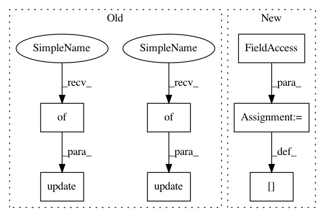

ef18893fb50c97c2c0d9d7b8b951455683f89635,rllib/agents/ppo/appo_tf_policy.py,,stats,#Any#Any#,342
Before Change
if policy.config["vtrace"]:
is_stat_mean, is_stat_var = tf.nn.moments(policy.loss.is_ratio, [0, 1])
stats_dict.update({"mean_IS": is_stat_mean})
stats_dict.update({"var_IS": is_stat_var})
if policy.config["use_kl_loss"]:
stats_dict.update({"kl": policy.loss.mean_kl})
stats_dict.update({"KL_Coeff": policy.kl_coeff})
return stats_dict
After Change
stats_dict["var_IS"] = is_stat_var
if policy.config["use_kl_loss"]:
stats_dict["kl"] = policy._mean_kl
stats_dict["KL_Coeff"] = policy.kl_coeff
return stats_dict
In pattern: SUPERPATTERN
Frequency: 3
Non-data size: 7
Instances
Project Name: ray-project/ray
Commit Name: ef18893fb50c97c2c0d9d7b8b951455683f89635
Time: 2020-09-02
Author: sven@anyscale.io
File Name: rllib/agents/ppo/appo_tf_policy.py
Class Name:
Method Name: stats
Project Name: ray-project/ray
Commit Name: ef18893fb50c97c2c0d9d7b8b951455683f89635
Time: 2020-09-02
Author: sven@anyscale.io
File Name: rllib/agents/ppo/appo_tf_policy.py
Class Name:
Method Name: stats
Project Name: uber/ludwig
Commit Name: 2c76a23d68e9ccdd40849a1e0c8597151d4ccc72
Time: 2020-03-27
Author: w4nderlust@gmail.com
File Name: ludwig/features/numerical_feature.py
Class Name: NumericalOutputFeature
Method Name: _setup_metrics
Project Name: uber/ludwig
Commit Name: 2c76a23d68e9ccdd40849a1e0c8597151d4ccc72
Time: 2020-03-27
Author: w4nderlust@gmail.com
File Name: ludwig/features/binary_feature.py
Class Name: BinaryOutputFeature
Method Name: _setup_metrics